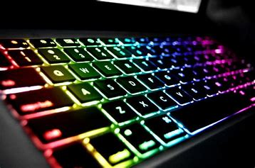
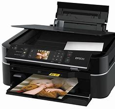
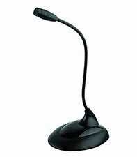
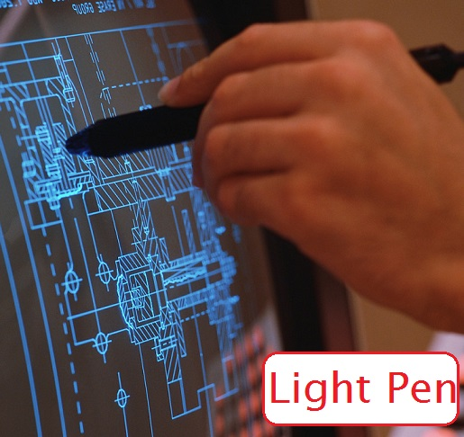
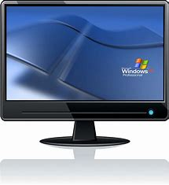
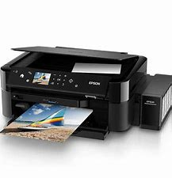
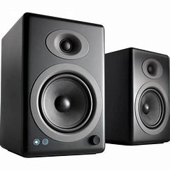
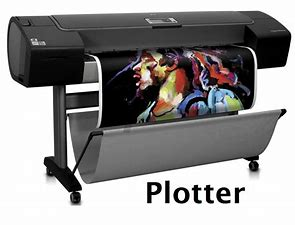

Input refers to the data or instructions which we feed into a computer. Input devices are used to enter data and information into a computer. The input unit converts the incoming data and instruction into a pattern of binary codes which is understood by a computer. Then it futher supplies the converted data to the processor for processing.
Some of the input devices discussed below:
Keyboard is one of the most important input devices used to input data and instructions into a computer. There are mainly five types of keys on a keyboard:
Typing Keys -> These keys include letters(Alphabet keys), numbers(Number keys), punctation(. , : ; ' ") and Special symbol(+ - - $ etc) keys. These keys also include the Shift, Caps Lock, Spacebar, Backspace and the Tab keys.
Control Keys -> These keys are either used alone or in combination with other keys to perform an actions, Ctrl, Alt, Windows logo key and the Esc key are various example of control keys.
Functio Keys -> They are used to perform specific tasks. They are placed on the top row of the kerboard and are labelled as F1,.....F12. These keys have different functions in different programs.
Navigation Keys -> They are used for moving through documents or web pages and sometimes for editing the text. These keys include the Arrow keys, HOME, END, PgUp, PgDn, DELETE and INSERT keys.
Numeric Keypad -> The numeric keypad consists of number keys from 0 to 9, the arithmetic operators and the decimal point. It is placed on the right side of a keyboard and is used for entering numbers at a faster pace.
Mouse is the most commonly used input and pointing device that lets you select and move items on the screen.
The left mouse button is used more frequently than the right button. A single left click selects an item while double-clicking on an item activates the application. The right click often displays a list of commands on the screen. You can also gain access to 'property' settings, with the right-click.
Dragging and dropping makes it easy to move an item on the screen.With this simple technique, one can delete, copy and move files in a file manager. Mouse is also used in drawing packages to draw free-hand lines, circle, boxes and oher complicated graphic images.
A scanner is an input devices that scans documents such as photographs and pages of text. When a document is scanned, it is converted into a digital formats. This creats an electronic version of the document that can be viwed and edited on a computer.
It is an input device used for reading bar codes present on various products. A bar code is a combination of dark and light strips. It is a computer readable representation of information, present in visual format. A bar code reader consists of a light sensor for translating optical impulses into electrical signals. It is a very useful devices for billing and inventory applications.
It is an input devices used to record and store voice or any other sound into a computer, generally as a .wav file. It is also used for recording a narration in PowerPoint presentation. Generally, it is used as a separate component for desktops but can be seen as an integrated component in some laptops. You can notice a special port in these computers where a michrophone can be connected. Microphone is commonly used in video conferencing, speech recongnition programs, radio broadcasting, recording and sound amplifying systems.
It is a light-sensitive pointing devices, commonly used to select or modify data on the screen. It allows the user to point on displayed objects or draw on the screen. Its operation is similar to a touch screen but has greater positional accuracy. It is easy to use and helpful for programs like Computer Aided Design(CAD).
The output unit is used for displaying or printing the processed data in a user readable form. A computer can have several output devices attached to it.
Some of the commom output devices are listed below:
Monitor is the most common output device. It is also calledVisual Display Unit(VDU), an electronic visual display for computers. Just like a television, a monitor also displays the output on the screen. The picture on a monitor is amde up of thousands of small coloured dots called pixels. The output displayed on the monitor is called Softcopy.
A printer is a peripheral device used for printing the output on a paper or any other printable media. The printed information on the paper is called a Hard Copy.
Speaker are the output devices which are used to play sound. A speaker converts an alternating electrical current into sound. It may be biult into the system unit or connected with cables. We can listen to music and various sound effects through them.
A plotter is a vector graphics printing devices which is used to print graphical plots on paper or polyester films. Plotters are different from printers. They are generally vector based and draw lines using a pen. Vector means from point to point, compared to the normal pixel based system. Vector based printing gives better lines and graphics. Plotters are basically used for graphical applications like Computer Aided Designing (CAD) and for printing maps and drawings.
